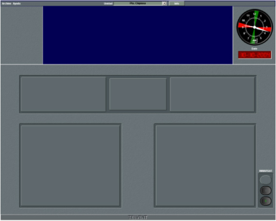

Pantalla de Control
La Pantalla de Control de la consola de instructor consta de las siguientes áreas:
- Barra de menú. Situada en la parte superior de la pantalla contiene las opciones que permiten al instructor preparar y transmitir mensajes Navtex y EGC. También permite acceder a la ventana de asignación de daños a unidad.
- Panel de reloj que muestra la hora GMT del ejercicio.
- Paneles de equipos. Estos paneles se muestran vacíos hasta que el instructor controla una unidad.

Cuando el instructor controla una unidad, la Pantalla de Control muestra el mismo aspecto que la Pantalla de Control de Equipos de la Consola de Alumno desde la que se puede controlar las comunicaciones de la unidad controlada.
Si el simulador incluye el módulo de navegación, el instructor también puede controlar la navegación de la unidad mediante la Conning Display, a la que se accede desde la opción Ver del menú.
| Pantalla de de Control de Equipos | Conning Display |
 |
 |
La Pantalla de Control de Equipos se describe detalladamente en el Manual de Alumno.
La Conning Display se describe detalladamente en el documento Manual de la Conning Display.
Las opciones del menú Archivo, así como la asignación de daños, que sólo están disponibles para el instructor, se describen en los siguientes apartados.